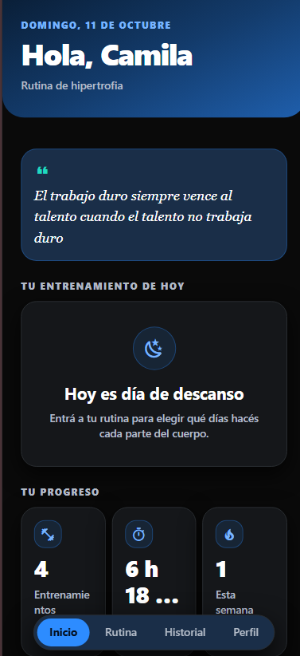
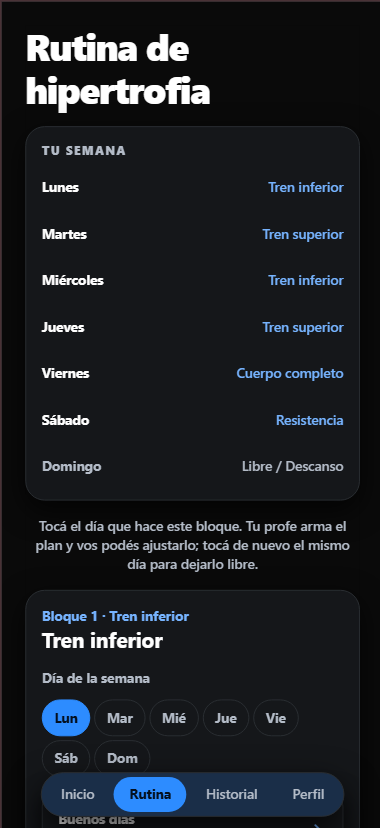
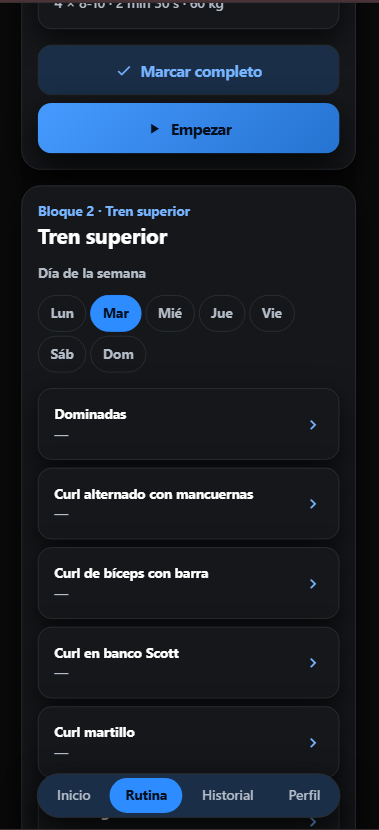
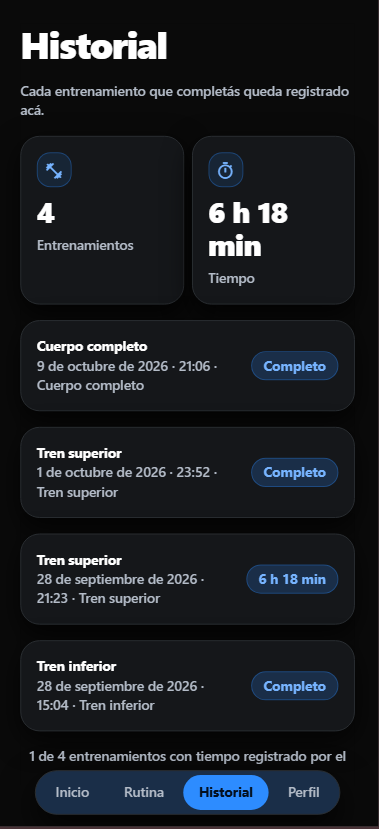
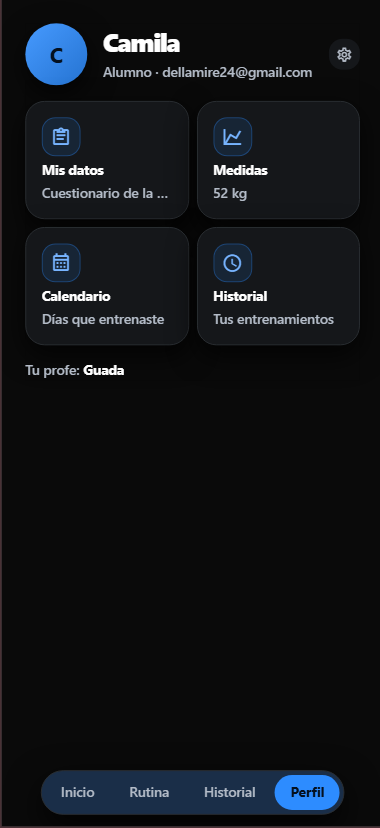

Superá tus límites.
Construí tu progreso.
Tu profe te arma la rutina. Vos entrenás, marcás el día y ves cómo avanzás semana a semana.
Ingresás con tu cuenta de Google o con tu email.
Tu semana
3 de 7 díasTodo tu entrenamiento, en un solo lugar.
Deslizá por las funciones y descubrí cómo Astra te acompaña antes, durante y después de entrenar.





Cómo empezar
-
1
Ingresá
Entrá con tu cuenta de Google o con tu email. Sin vueltas, en un toque.
-
2
Contanos de vos
Respondé unas preguntas rápidas: fecha de nacimiento, peso, altura, objetivo y nivel. Lesiones y enfermedades son opcionales.
-
3
Entrená
Cuando tu profe te asigna la rutina, aparece en la pestaña Rutina. Y solo queda empezar a entrenar!
Menos tiempo organizando. Más tiempo haciendo crecer a tus alumnos.
Conocé el panel ↗El acceso de profes es por invitación.
- Consultá la actividad y el estado de las rutinas de tus alumnos.
- Configurá series, repeticiones, descansos y peso de forma simple.
- Elegí ejercicios del catálogo y personalizá tus consejos.
Panel de seguimiento
ActualizadoActividad reciente
Preguntas frecuentes
¿Necesito tener un profe para usarla?
Sí, Astra está pensada para que trabajes con un profe que te arme la rutina. Vos entrenás y registrás tu progreso; tu profe se encarga de diseñar el plan que necesitás.
¿Tengo que contar mis lesiones o enfermedades?
No es obligatorio. Esos campos son opcionales y están ahí para que tu profe tenga la información necesaria si decide adaptarte la rutina.
¿Dónde la puedo usar?
Desde el navegador de cualquier dispositivo: celular, tablet o computadora. No necesitás descargar nada, entrás y listo.
¿Cómo ingreso?
Podés ingresar con tu cuenta de Google o con tu email y contraseña. Si es tu primera vez, creamos tu cuenta automáticamente.
No esperes al momento perfecto.
Empezá a superarte.
Entrá a Astra, encontrá tu rutina y convertí cada entrenamiento en un paso hacia adelante.
Entrar a Astra →